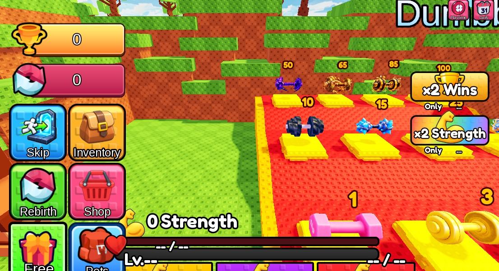
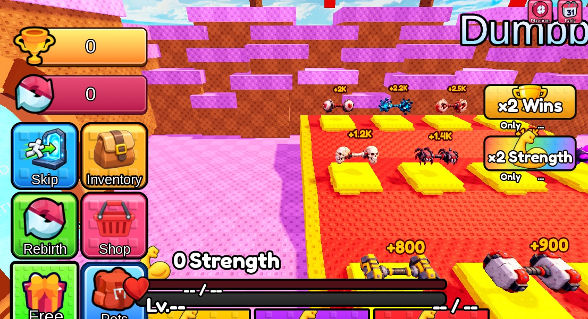

2026-11-17。副本PlaceId 126576845524886／UniverseId 10765181857。直前commit 7ee7305と現在のStudio Source・エディターバッファを照合して変更。
両Worldの24設備に「+」を追加（例：+25、+1.2K）。文字倍率を2→1.5、すなわち直前の75％へ調整。Owned／Equippedは引き続き非表示。NumberFormat、FredokaOne、オレンジと暗色縁取り、購入・装備・Strength加算値は維持。
ReplicatedStorage.Config.DumbbellLabelStyle：SizeMultiplier=1.5。文字と表示域を共通倍率で調整。ReplicatedStorage.Modules.DumbbellStandPresentation：ApplyValueで共通NumberFormatの結果に「+」を追加。ReplicatedStorage.DumbbellStandBillboardTemplateと、両World各12設備のBillboardGuiへ再適用。全Full Pathは確認結果に記載。

今回分のみ通常commit・origin/mainへpush。commit IDは完了回答に記載。